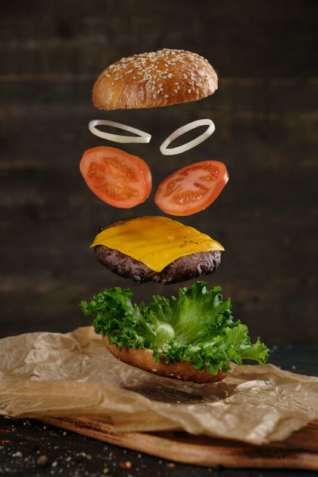

UPSIDE Chicken
Poulet cultivé avec des ingrédients végétaux, servi dans certains restaurants de Californie.
Les protéines obtenues sont identiques aux protéines animales produites de manière conventionnelle et peuvent être utilisées pour fabriquer une large gamme de produits (fromage, glaces, lait, beurre, poudre de protéines, albumine, etc.)
L'utilisation de souches microbiennes génétiquement modifiées n'est pas nouvelle, elle est utilisée depuis plusieurs décennies dans le domaine médical et alimentaire pour produire :
En outre, il existe de nombreux aliments fermentés de manières traditionnelles :
Tempeh, bière, yaourt, kimchi, choucroute et bien d'autres

"La deuxième domestication"
Nous avons d’abord domestiqué les macro-organismes (animaux et plantes), et maintenant nous commençons à domestiquer les micro-organismes.
Évoluer de l'élevage d'organismes multicellulaires à l'élevage d'organismes unicellulaires,
nous permet de faire plus avec moins.
L'agriculture animale industrielle est la principale cause du changement climatique : elle émet entre 14 % et 51 % des émissions de gaz à effet de serre, plus que l'ensemble du secteur des transports
L'élevage industriel est également largement responsable des problèmes environnementaux les plus urgents :

Il faut nourrir 9 calories à un poulet, pour obtenir 1 calorie en viande
C'est-à-dire 9 fois plus de terres, 9 fois plus d'eau, 9 fois plus de ressources par calorie que les protéines végétales. Avec le porc et la vache, le gaspillage des ressources est encore pire (100 calories nourris pour 3 calories en viande, soit une perte de 97%)
77 % des terres agricoles sont utilisées pour nourrir les animaux afin de produire de la viande, mais la viande ne fournit que 30 % des protéines et 18 % des calories consommées globalement.
L'agriculture animale consomme 29% de l’eau agricole et contamine les réservoirs souterrains de lisier
La demande en viande va doubler d'ici 2050. Il est impossible de nourrir notre population mondiale avec des protéines d'origine animale avec une seule planète

Globalement, 70% de nos antibiotiques sont utilisés pour les animaux d'élevage.
75% des maladies contagieuses sont d'origine zoonotique
La prochaine pandémie sera probablement causée par l'exploitation animale, tout comme le Covid-19

Les produits laitiers et autres produits de fermentation de précision ne contiennent pas :

Chaque année, 75 milliards d'animaux d'élevage (poulets, porcs, vaches, etc.) et 2,7 trillions d'animaux marins sont tués, pour produire notre viande, nos produits laitiers, poisson et œufs
Ce sont les 4 principales technologies qui définissent l'avenir de la production alimentaire :
À base de micro-organismes, elle permet la production de protéines et d'autres ingrédients (graisses, colorants...) à partir de levures et de champignons

À base de mycélium fongique, elle permet la production de mycoprotéines à haute valeur nutritionnelle en peu de temps. Exemple : Quorn

Basée sur des cellules, elle permet la production de viandes et de poissons bio identiques à l'équivalent animal, à partir de cellules animales qui se reproduisent dans un bioréacteur

Protéine complète et naturelle, produite par des micro-organismes non modifiés, nourris en eau et en air (hydrogène, oxygène, azote, carbone)
"La plus grande perturbation du système alimentaire depuis l'invention de l'agriculture"
Ces produits comprennent des aliments issus de cellules cultivées, de la fermentation de précision ou de la fermentation de biomasse.
Poulet cultivé avec des ingrédients végétaux, servi dans certains restaurants de Californie.

Boisson contenant des protéines de lactosérum sans animaux produites par fermentation de précision.

Burger végétal contenant de l’hème produit par fermentation de précision.

Préparations pour boissons contenant des protéines de blanc d’œuf produites par fermentation de précision.


Caille cultivée servie dans certains restaurants à Singapour et en Australie.
Protéine végétale complète, à base de mycélium fongique et fermentation de biomasse


Découvre le rôle émergent de la fermentation microbienne dans la construction de la prochaine génération de produits protéiques alternatifs.
Remarque : Pour activer les sous-titres, cliquez sur l'icône des paramètres, puis sur "Subtitles/CC", "Automatic Translation", et sélectionnez "Français"
Au premier semestre 2026, la fermentation de précision a levé 100 millions d’€, contre 97 millions pour toute l’année 2025. La viande cultivée a levé 18 millions, y compris pour les aliments pour animaux. Sources: gfieurope.org, gfieurope.org
Investissements privés levés par les entreprises européennes (millions d’€). 2026 couvre janvier à juin seulement ; les totaux annuels et semestriels ne sont pas directement comparables.
De 2020 à 2025, les financeurs européens ont consacré 1,3 milliard d’€ à la recherche sur les protéines alternatives : 29 % à la fermentation et 9 % à la viande et aux produits de la mer cultivés. Les Pays-Bas ont attribué 60 millions d’€ à un programme couvrant les deux technologies. Sources: gfieurope.org, cellulaireagricultuur.nl
Danone et ses partenaires ont ouvert en France en 2026 une plateforme partagée de fermentation, avec plus de 20 millions d’€ investis. Bel et Standing Ovation ont annoncé une production de caséine à échelle industrielle ; Danone Ventures a rejoint Bel dans son financement de 30 millions d’€. Sources: danone.com, groupe-bel.com, standing-ovation.co
Vivici, soutenue par Fonterra, a levé 32,5 millions d’€ en 2025 et reçu 12,5 millions de financement européen en 2026. Son futur partenaire de production aux États-Unis cherchait encore des fonds pour ouvrir en octobre 2026. Sources: invest-nl.nl, agfundernews.com, agfundernews.com
Le groupe de viande JBS a annoncé un plan de 100 millions de dollars comprenant l’espagnole BioTech Foods, une usine et un centre de recherche au Brésil. Le centre a ouvert en 2026 ; l’état de fonctionnement de l’usine espagnole reste incertain. Believer Meats, soutenue par Tyson, a achevé une usine puis cessé ses activités. Sources: api.mziq.com, cnnbrasil.com.br, ag.ingredion.com
La Chine a inclus la viande cultivée et les technologies connexes dans son plan de recherche agricole 2021–2025. Selon la FAO, elle représentait 36 % de la consommation apparente mondiale d’animaux aquatiques en 2021. Une estimation publiée en 2021 situait la part de la Chine à 28 % de la consommation mondiale de viande. TIME. Sources: nyncj.cngy.gov.cn, digitallibrary.un.org
Rapports 2026 sur les développements de 2025. Les rapports et webinaires sont en anglais.
La fermentation de précision et la viande cultivée pourraient contribuer à relever les défis de la production alimentaire, mais davantage d’investissements sont nécessaires pour faire progresser la recherche, réduire les coûts et augmenter la production.
Les gouvernements peuvent financer la recherche en libre accès, soutenir les jeunes entreprises et créer des installations partagées qui facilitent la mise sur le marché de nouveaux produits. Le partage des connaissances et la collaboration peuvent aider davantage de chercheurs et d’entreprises à progresser.
Une réglementation claire et fondée sur la science est également essentielle pour garantir la sécurité alimentaire tout en offrant aux innovateurs une voie prévisible vers le marché.
Les protéines alternatives pourraient contribuer à relever plusieurs défis à la fois, notamment le changement climatique, les dommages environnementaux et le bien-être animal. Les investissements publics et privés peuvent aider à transformer ce potentiel en choix alimentaires pratiques et accessibles.
Demandez à vos représentants de soutenir la recherche et les investissements publics.
La fermentation de précision, la fermentation de biomasse et la viande cultivée ont besoin de davantage d’investissements pour atteindre leur plein potentiel. Les investisseurs, les responsables politiques et les bailleurs de fonds de la recherche peuvent contribuer à faire progresser ces technologies.


 La viande réinventée : la prochaine révolution agricole
La viande réinventée : la prochaine révolution agricole Est-ce que quelqu'un mangera de la viande d'origine végétale et de la viande cultivée ?
Est-ce que quelqu'un mangera de la viande d'origine végétale et de la viande cultivée ? Humbird ou imposture : les progrès de la viande cultivée défient les sceptiques
Humbird ou imposture : les progrès de la viande cultivée défient les sceptiques Énergies renouvelables, IA et protéines alternatives
Énergies renouvelables, IA et protéines alternatives Il faut parler de la fermentation de précision
Il faut parler de la fermentation de précision Ce que les révolutions passées nous apprennent sur l’agriculture cellulaire et les protéines alternatives
Ce que les révolutions passées nous apprennent sur l’agriculture cellulaire et les protéines alternatives Cultivez votre palais pour un nouveau type d’aliment
Cultivez votre palais pour un nouveau type d’aliment Fermentation de précision : l’avenir de l’alimentation
Fermentation de précision : l’avenir de l’alimentationDécouvrez le répertoire mondial des entreprises de protéines alternatives du Good Food Institute.